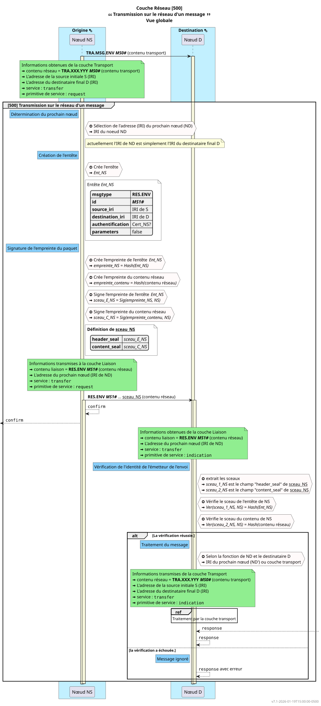

Responsabilité
-
La couche Réseau doit garantir l’envoi entre chaque nœud pour parcourir un chemin entre la source (identifié par sa IRI) et le destinataire (identifié par sa IRI).
-
La couche Réseau doit déterminer lors d’un transfer vers la couche inférieur quel est le prochain nœud à joindre (propriété
destination_iridu NIDU).
Interfaces
Couche supérieure
entrant
Un message en provenance de la couche Transport avec un contexte indiquant, le service, la primitive de service utilisée, l’adresse (IRI) de la source initiale du contenu et l’adresse (IRI) du destinataire final du contenu.
-
transfer.request: primitive utilisée par la couche supérieure pour envoyer un message à la couche Réseau et demander qu’il soit traité et transféré. Attends untransfer.confirmen réponse. -
transfer.response: primitive utilisée par la couche supérieure pour indiquer à la couche Réseau que le message obtenu partransfer.indicationest traité. Déclenche untransfer.responseà la couche inférieure.
sortant
Un message pour la couche Transport (chaîne de caractère décrivant un objet JSON) avec un contexte indiquant, le service, la primitive de service utilisée, l’adresse (IRI) de la source initiale du contenu et l’adresse (IRI) du destinataire final du contenu.
-
transfer.confirm: primitive utilisée par la couche Réseau pour indiquer que le message transmis partransfer.requestest traité. Est déclenché par untransfer.confirmde la couche inférieure ou par une erreur local. Dans ce dernier cas, le contenu doit alors être de la forme "FAILED: information"). -
transfer.indication: primitive utilisée par la couche Réseau pour indiquer qu’un message est reçu et doit être transféré. Contient le message. Est déclenché par untransfer.indicationde la couche inférieure.
{ "source_iri": string
, "destination_iri": string
, "service": string
, "service_primitive": string
, "options": object (actuellement : false)
}
Couche inférieure
entrant
Un message en provenance de la couche Liaison avec un contexte indiquant l’adresse (IRI) du nœud où il doit être transmis, le service et la primitive de service utilisée. Le message doit respecter le format standard (décrit après) sinon le message est ignoré.
-
transfer.confirm: primitive utilisée par la couche inférieure pour indiquer que le message transmis partransfer.requestest traité. Déclenche untransfer.confirmà la couche supérieure. -
transfer.indication: primitive utilisée par la couche inférieure pour indiquer qu’un message est reçu et doit être transféré. Contient le message.
sortant
Un message pour la couche Liaison avec un contexte indiquant l’adresse (IRI) du nœud où le message doit être transmis, le service et la primitive de service utilisée.
-
transfer.request: primitive utilisée par la couche Réseau pour envoyer un message à la couche inférieure pour qu’il soit transféré à son destinataire. Est déclenché par untransfer.requestde la couche supérieure -
transfer.response: primitive utilisée par la couche Réseau pour indiquer à la couche inférieure que le message obtenu partransfer.indicationest traité. Peut être déclenché par une réponse de la couche supérieure (transfer.response), auquel cas le contenu est le même que celui transmis par la couche supérieure, ou par une erreur locale. Dans ce dernier cas, le contenu doit alors être de la forme"FAILED: information"). Par exemple, un échec d’authentification du nœud précédent pourrait déclencher un contenu"FAILED: cannot authentificate previous node".
{ "destination_iri" : string
, "service": string
, "service_primitive": string
, "options": object (actuellement : false)
}
Format des messages pour la couche réseau
Un message est une chaîne de caractère représentant un objet JSON. Le format de l’objet JSON est défini comme suit.
{ "header" : object
, "stamp" : object
, "content" : object ou string
}
{ "header_seal" : string
, "content_seal" : string
}
{ "msgtype" : string
, "id" : object
, "source_iri": string
, "destination_iri": string
, "authentification": string
, "version" : { "number" : "x.x.x"
, "reference" : "IRI"
}
, "parameters": object (actuellement : false)
}
Types
La chaîne de caractères représentant le type du message est
-
RES.MSG.ENV
Numéro d’identification du message (id)
Le numéro d’identification du message est un numéro généré unique (uuid).
Schéma JSON des communications
-
Le schéma JSON de la IDU de la couche Transport (
TIDU) ; -
Le schéma JSON de la IDU de la couche Réseau (
NIDU) ; -
Le schéma JSON de la PDU de la couche Réseau (
NPDU).

Diagramme de séquence de message
